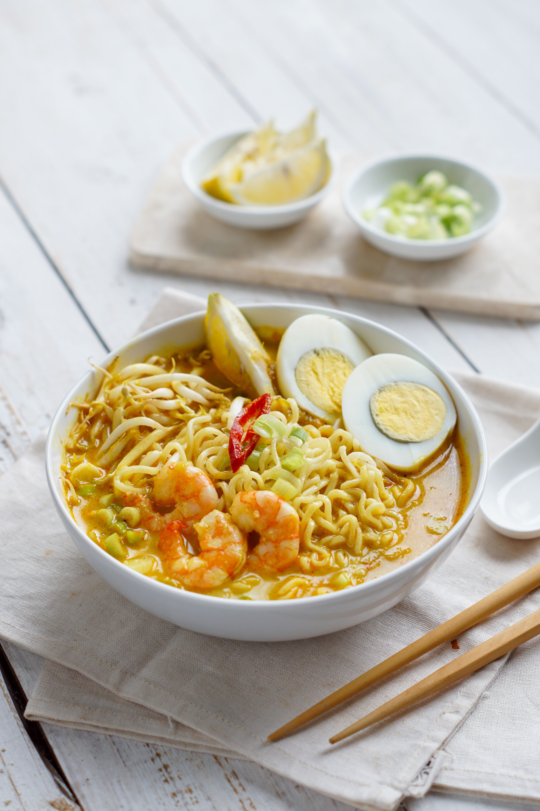

Laksa

About the dish
Laksa is a noodle soup and every region in Malaysia has its own version. There are curry laksa (creamy and spicy), asam laksa (sour and spicy), Laksa Johor, Sarawak Laksa, Laksam.
It comes as a hot bowl of thick rice noodles with toppings like bean sprouts, tofu puffs or fresh herbs.
Fun fact: Penang asam laksa is often topped with fresh mint, cucumber and pineapple slices.
Ingredients
- Thick rice noodles
- Curry broth with coconut milk, or sour fish broth with tamarind
- Bean sprouts, tofu puffs or prawns
- Fresh herbs
- Sambal